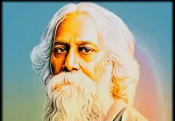

"You can't cross the sea merely by standing and staring at the
water. ..."

Who is RabindranathTagore ?
Rabindranath Tagore (1861-1941) was a celebrated Indian poet,
musician, and social reformer. The first non-European Nobel laureate
in Literature (1913), his iconic work "Gitanjali" gained global
acclaim. A polymath and Bengal Renaissance figure, he founded
Shantiniketan, promoting a holistic education model. Tagore's legacy
encompasses art, music, literature, and progressive societal ideals,
profoundly influencing Indian culture.
1861: Early Life and Background
- Rabindranath Tagore was born on May 7, 1861, in Calcutta, British
India (present-day Kolkata, India), into a highly distinguished and
cultured family.
- He was the youngest of thirteen children born to Debendranath Tagore
and Sarada Devi.
- Tagore hailed from a lineage of poets, philosophers, and social
reformers.
1878-1880: Education and Travels
- Tagore embarked on a journey to England in 1878 to pursue formal
education, enrolling at University College London.
- However, he felt out of place in the rigid education system and the
cultural differences, prompting him to leave and return to India.
1883-1900: Literary Ventures and Family Life
- At the age of 22, Tagore published his first poetry collection,
"Kabi-Kahini" (The Poet's Tale), marking the initiation of his literary
career.
- Tagore got married to Mrinalini Devi in 1883, and they had five
children together.
- During this period, Tagore delved into poetry, short stories, essays,
and plays, making significant contributions to Bengali literature.
1901: Founding of Santiniketan
- Rabindranath Tagore founded an experimental school, Santiniketan, near
Bolpur in West Bengal in 1901, which later evolved into Visva-Bharati
University.
- He aimed to create a unique educational environment that combined
traditional Indian teachings with a modern, progressive approach.
1913: Nobel Prize in Literature
- Tagore received the Nobel Prize in Literature in 1913 for his
collection of poems titled "Gitanjali" (Song Offerings).
- The Nobel Committee cited his profoundly sensitive, fresh, and
beautiful verse as the reason for the award.
1915-1941: Global Influence and Legacy
- Tagore extensively traveled around the world, engaging in dialogues
about education, spirituality, nationalism, and social reforms.
- He formed friendships with notable figures such as Albert Einstein and
H.G. Wells, discussing various ideas and promoting cultural
understanding.
- Tagore actively advocated for India's independence from British rule
and sought unity among diverse communities.
- He used his literary and musical prowess to convey messages of peace,
harmony, and humanism.
1941: Passing and Legacy
- Rabindranath Tagore passed away on August 7, 1941, in Calcutta,
leaving behind a profound legacy in various fields.
- His legacy encompasses poetry, music, art, education, social reform,
and advocacy for cultural harmony.
- Tagore's contributions continue to inspire and influence generations,
making him a revered figure in both Indian and global cultural history.